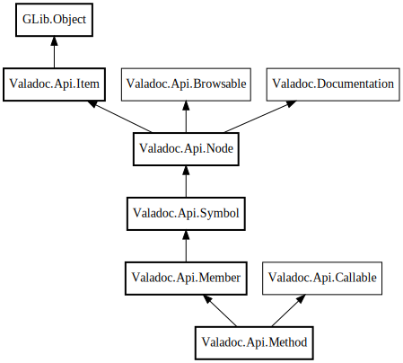

Method
Object Hierarchy:

Description:
public class Method :
Symbol,
Callable
Represents a function or a method.
Content:
Properties:
Creation methods:
Methods:
Fields:
Inherited Members:
All known members inherited from class Valadoc.Api.Symbol
All known members inherited from class Valadoc.Api.Node
All known members inherited from class Valadoc.Api.Item
All known members inherited from class GLib.Object
All known members inherited from interface Valadoc.Api.Callable
All known members inherited from interface Valadoc.Documentation